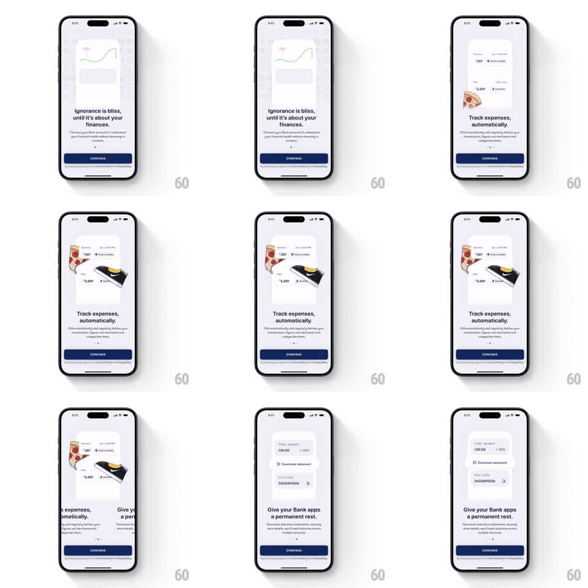

Media
Frame-by-frame

Rebuild this interaction 1:1: Fold's onboarding carousel - full-width pages swipe horizontally, each pairing an app-screenshot card with floating 3D objects (pizza slice, wallet) that parallax and settle at different speeds over clean headlines and a navy CONTINUE button.

Rebuild this interaction 1:1: Fold's onboarding carousel - full-width pages swipe horizontally, each pairing an app-screenshot card with floating 3D objects (pizza slice, wallet) that parallax and settle at different speeds over clean headlines and a navy CONTINUE button.
## Integration
Integration: stack-agnostic spec - springs given as stiffness/damping, timed motions as duration + curve; map every value to your framework and animation library of choice.
## Scene
Light gray background. Each page: a rounded app-screenshot card in the upper two-thirds (transaction list, balance view, statement view), with small 3D props floating at its edges. Below: two-line serif headline ("Ignorance is bliss, until it's about your finances." / "Track expenses, automatically." / "Give your Bank apps a permanent rest."), small body copy, page dots, full-width navy CONTINUE button pinned at the bottom.
## Motion spec
Pattern: parallax onboarding carousel.
- Swipe drives the page track 1:1; on release it snaps to the nearest page (spring stiffness ~260, damping ~26).
- The screenshot cards move with the track; the 3D props move at 0.6x track speed (parallax) and overshoot on snap, settling with their own spring (stiffness ~200, damping ~14) so they land after the page.
- Headline and copy crossfade near the snap point (old out 150ms, new in 200ms, slight translateY 8px rise).
- Page dots: the active dot stretches into a pill (width animates 8px to 20px, 200ms, ease-out).
- Props also idle: gentle float (translateY +-6px sine, ~3s, phase-offset per prop).
## Calibration
- Two-layer motion (page fast, props slow) is the whole feel - lock the props to the page speed and the carousel goes flat.
- Snap must be decisive; a weak spring makes the pages feel draggable rather than swipeable.
## Reduced motion
Pages snap without parallax or overshoot; headlines crossfade only; idle float off.
## Don't miss
- Props belong to the page content, not the chrome - they travel with their page, just slower.
- CONTINUE is fixed chrome; only the dots and content above it move.